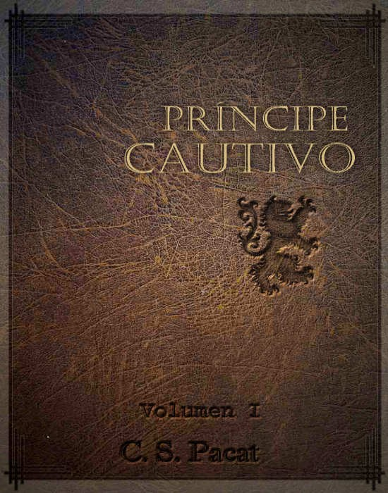
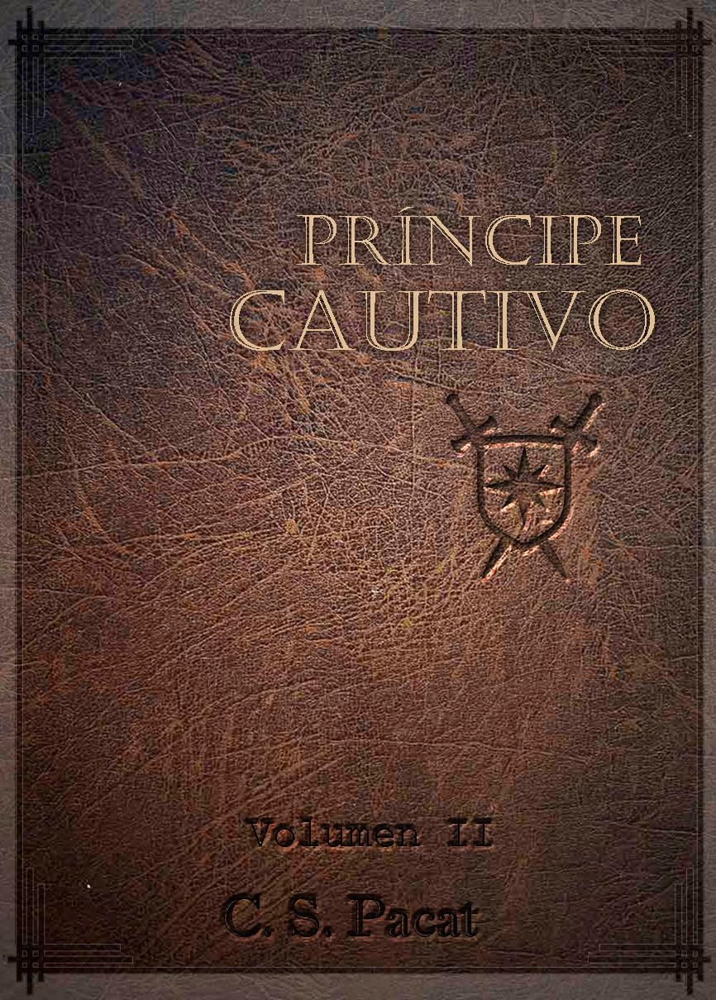
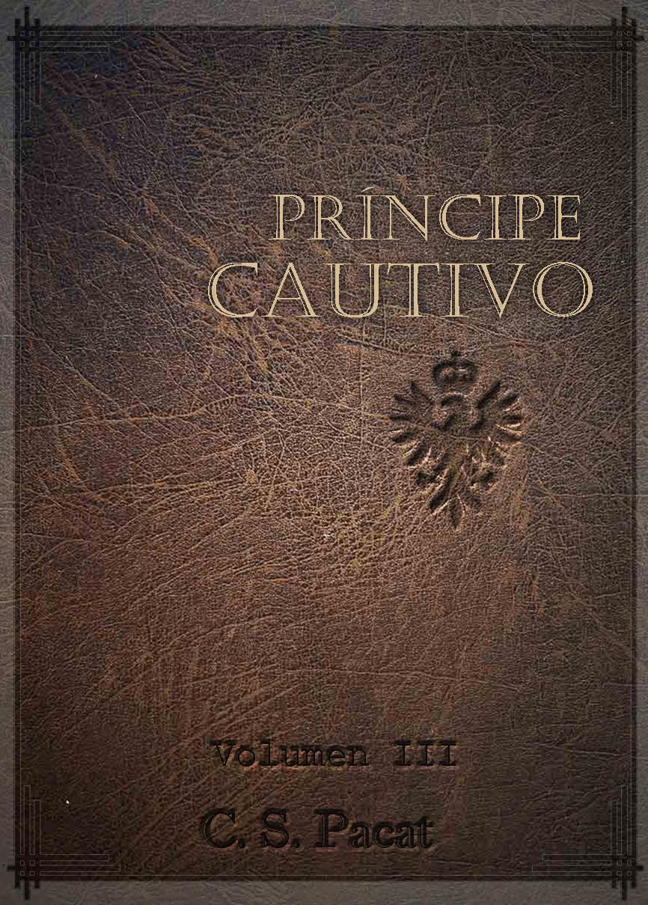

A pesar de que realmente me cuesta escoger unos pocos libros como mis favoritos, a continuación presentaré algunos de los libros que más me han gustado en el último año.
Priscila Edith Gómez Rascón
Autor: Stephen King
| Portada | Sinopsis |
|---|---|
|
Con la ayuda de un muerto, Blaze ha logrado perpetrar el crimen del siglo. Clay Blaisdell, llamado Blaze por todos, mide dos metros y pesa ciento treinta y seis kilos. Es un verdadero gigante. Sin embargo, hasta conocer a George Rackley nunca había hecho nada grande. George le enseñó cien maneras de estafar a la gente e ideó para él un plan ambicioso: secuestrar a un niño rico. La familia Gerard es multimillonaria y el nuevo retoño del clan valdrá muchos de estos millones. Solo hay un problema: cuando llega el momento de ponerlo todo en marcha, George, el cerebro de la operación (y de todo lo que hacen), muere. O quizá no. |
Autor: Dmitry Glukhovsky
| Portada | Sinopsis |
|---|---|
| Año 2033, Moscú. Los supervivientes de la terrible guerra nuclear que ha devastado el mundo se han refugiado bajo tierra, en la red del metro. En cada una de las estaciones, convertidas en pequeñas ciudades Estado, sus habitantes se agrupan en torno a las más diversas ideologías, religiones o movidos por un único objetivo: impedir una invasión de las criaturas mutantes del exterior. |
Autor: Rodolfo Pérez Valero
| Portada | Sinopsis |
|---|---|
|
Entre los narradores policiacos latinoamericanos, el cuento no ha sido afortunado. Si excluimos dos o tres, los
narradores del género negro buscan la longitud de la novela que les permite desplegar tramas y personajes,
ciudades y paraísos pervertidos. Rodolfo Pérez Valero, en cambio, tiene esa agilidad de la trama corta que le permite amarrar en media docena de cuartillas una anécdota y sus historias se han tornado cada vez más ingeniosas. |
Autor: Catt Ford
| Portada | Sinopsis |
|---|---|
| Nicholas Sayers necesita dinero para la universidad, así que acepta trabajar como el asistente del
infame fotógrafo Damian Wolfe. Solo le tomarán fotografías, ¿correcto? Incorrecto. Aunque Nick nunca se
preguntó qué clase de hombre es o lo que desea de la vida, trabajar para Damian durante una sesión fotográfica de
bondage y sadomasoquismo (BSDM) le abre los ojos a todo tipo de posibilidades sexuales y muchas de ellas
incluyen al atractivo Sr. Wolfe. Damian tiene serias dudas de involucrarse con el joven que desconoce por completo el estilo de vida BDSM, pero el enfoque divertido y aventurero de Nick ante las nuevas experiencias es demasiado atrayente como para resistirse. Aunque sabe que podría cometer un error, Damian acepta a Nick en su vida. Coquetear con el control, la sumisión y el dolor excita a Nick más de lo que imaginó posible. Con Damian, Nick aprende a descubrir sus deseos ocultos y descubre que ceder el control no lo hace débil… Darle a alguien más el control de su placer sexual simplemente lo incrementa. Cuestión que es similar para Damian. El control lo excita. Así que comienzan a explorar juntos estas experiencias sensuales y ninguno de ellos espera encontrar el amor de esa forma. |
Autor: C. S. Pacat
Tabla con las características de cada uno de los libros de la trilogía:
| Título | Sinopsis | Portada |
|---|---|---|
| Príncipe Cautivo Vol. I | Damen es un héroe guerrero de su pueblo y el heredero legítimo del trono de Akielos, pero cuando su medio
hermano toma el poder, Damen es capturado, despojado de su identidad y enviado al servicio del príncipe de una
nación enemiga como esclavo de placer. Su nuevo amo es hermoso, manipulador y peligroso; el príncipe Laurent personifica lo peor de la Corte de Vere. Sin embargo, dentro de la insidiosa red política vereciana, nada es lo que parece; cuando Damen se encuentra atrapado en el juego de intrigas referentes a la sucesión al trono, deberá colaborar con Laurent para sobrevivir y salvar a su país. Damen solo tiene una estrategia: nunca, jamás, revelar su verdadera identidad. Porque el hombre que más necesita es también aquel que tiene más razones para odiarle que ningún otro... |
 |
| Príncipe Cautivo Vol. II | "Este era el más poderoso de los señores de Vere desplegando sus estandartes para la guerra." Con su país al borde de la guerra, Damen y su nuevo amo el Príncipe Laurent deben intercambiar las intrigas del palacio por la fuerza arrolladora del campo de batalla a medida que viajan a la frontera para evitar un complot mortal. Obligado a ocultar su identidad, Damen se siente atraído por el peligroso, carismático Laurent. Pero a medida que la confianza en ciernes entre los dos hombres se profundiza, la verdad de los secretos de ambos, de sus pasados, permanece suspendida para surgir con un culminante golpe mortal... |
 |
| Príncipe Cautivo Vol. III | Con la identidad ya revelada, Damen deberá hacerle frente a su amo, el Príncipe Laurent, como Damianos de
Akielos, el hombre a quien Laurent ha jurado matar. Al borde de una batalla trascendental, el futuro de ambos países pende de un hilo. Las fuerzas de Kastor se concentran en el sur. En el norte, los ejércitos del Regente se movilizan para la guerra. La única esperanza que tiene Damen de reclamar su trono es luchar junto a Laurent en contra de sus usurpadores. Forzados a una alianza incómoda, los dos príncipes se adentran en el interior de Akielos, donde tendrán que enfrentarse aún al más peligroso de sus oponentes. Pero incluso si la frágil confianza que han construido sobrevive a la revelación de la identidad de Damen, ¿podrán resistir la última jugada mortal del Regente por el trono? |
 |